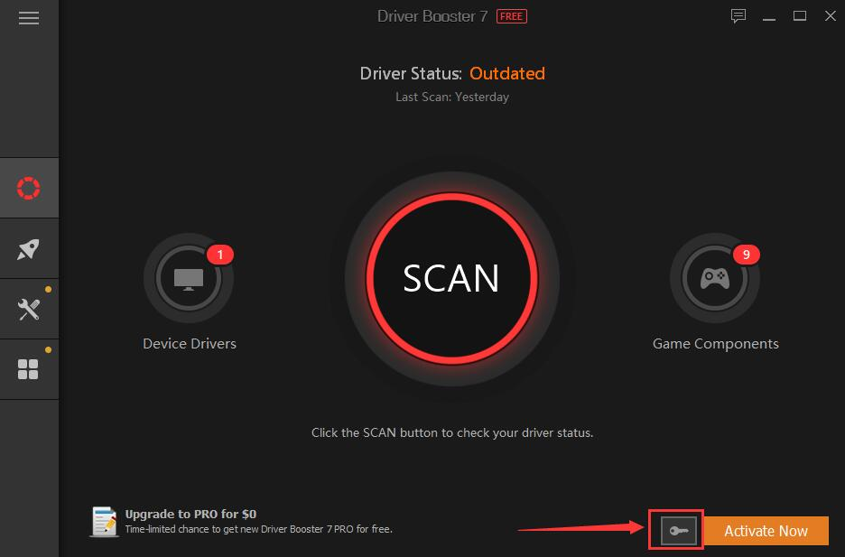
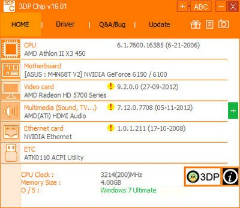

Nunca te has preguntado o alguna vez en tu vida te has hecho la siguiente pregunta, ¿por qué últimamente Windows tiene tanto problema? como el pantallazo azul, lentitud o problemas mayores, Tecno Expand ha estado con varios clientes relacionado con estos problemas de Windows y ellos mismo ratifican que cuando compraron su computadora vino con su Windows original y nunca le ha dado errores, comenzaron cuando instalaron un sistema pirata quiere decir no comprado, descargado gratuitamente, bueno aquí no solo te voy a dar soluciones para los errores más comunes de Windows sino también desactivar las actualizaciones de manera segura que es la principal causante de problemas comunes como el pantallazo azul o lentitud, y también te voy a explicar como funciona todo esto si quieres saber más, adelante te daré lo que realmente quieres saber, así que, quédate hasta el final que te tengo un truco que pocos conocen.
Primero que todo el gran problema son las actualizaciones de Windows pero, en realidad Microsoft la creadora de este sistema operativo no tiene realmente la culpa, con un poco de lógica y una investigación se puede concluir que la empresa tenía razón en una parte, las actualizaciones si son realmente seguras como ellos dicen por eso el Windows 10 últimamente ha tenido problemas como el pantallazo azul entre otras, por que Microsoft detectan que la copia de Windows no es original o detectan un crack que pueda causar problemas, de allí viene la causa por eso hay más errores en Windows 10 que el propio Windows 7, por que el 10 es mucho más seguro, ahora bien, si puedes comprar una licencia te podemos asegurar que tendrás menos probabilidades de tener errores mientras la uses.
Si eres esa típica persona que no quieres pagar nada solo piarata para eso Tecno Expand te da la solución que ofrecemos a nuestros clientes una vez instalado el sistema operativo lo que vamos a hacer es simplemente desactivar las actualizaciones pero de la manera más segura posible que de verdad no se actualice absolutamente nada, pero ojo habrá que hacer algo y esto es el ingrediente secreto para evitar errores.
Primero vamos a desactivar las actualización y lo que vamo a hacer es lo siguiente:
1-Pulsa la tecla de Windows + R, escribe services.msc en la barra de ejecución y pulsa la tecla Enter.
2-En la lista de procesos localiza el de Windows Update y ábrelo clicando en él.
3-Para desactivarlo, en la pestaña General, busca el campo "Tipo de incio" y cámbialo a "Deshabilitado".
4-Reinicia el PC y las actualizaciones automáticas habrán pasado a la historia.
Lo primero es obviamente desactivar las actualizaciones en caso que no quieras comprar una licencia, puedes ahorrarte todo este proceso, la segunda solución seria instalarle los drivers y Tecno Expand te ofrece dos programas que nos ha ido de maravilla con nuestros clientes, el primero es para Windows 7 y 8 y se llama Driver Booster el segundo es para Windows 10 se llama 3DP Chip con esto dos programas podemos hacer la instalación de driver y listo solo falta el antivirus que te recomendamos el 360 Total Security con todo esto bien hecho ya podemos tener un buen rendimiento en nuestra computadora.
Una vez instalado, la analizamos e instalamos lo que falte y reinicie la PC y listo.
Aquí solo cliquemos lo que nos falta y descargamos los drivers poco a poco y listo ya tenemos todos.
Si te ha funcionado este artículo o te alguna manera te hemos podido ayudar puede seguirnos en nuestro canal de Youtuber Facebook Instragram Responde a tus dudas sin problemas, también ofrecer soluciones si tienes problema con tu computadora de cualquier tipo.
Quizas te puede interesar Este video